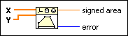
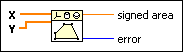
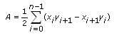

Polygon Area VI
Owning Palette: Computational Geometry VIs
Requires: Full Development System
Calculates the signed area of a simple polygon.

 Add to the block diagram Add to the block diagram |
 Find on the palette Find on the palette |
Owning Palette: Computational Geometry VIs
Requires: Full Development System
Calculates the signed area of a simple polygon.

| Add to the block diagram |
Find on the palette |
 |
X specifies the x-coordinates of the vertices of the polygon. The length of X must be greater than or equal to 3. |
|
Y specifies the y-coordinates of the vertices of the polygon. The length of Y must equal the length of X. |
 |
signed area returns the signed area of the polygon. The signed area is positive if the vertices of the polygon are in counterclockwise order. Otherwise, signed area is negative. |
 |
error returns any error or warning from the VI. You can wire error to the Error Cluster From Error Code VI to convert the error code or warning into an error cluster. |
A simple polygon is a polygon with no boundaries that cross each other. The following equation defines the signed area of a simple polygon with n vertices.

where (xi, yi) is the ith vertex and (xn, yn) = (x0, y0).